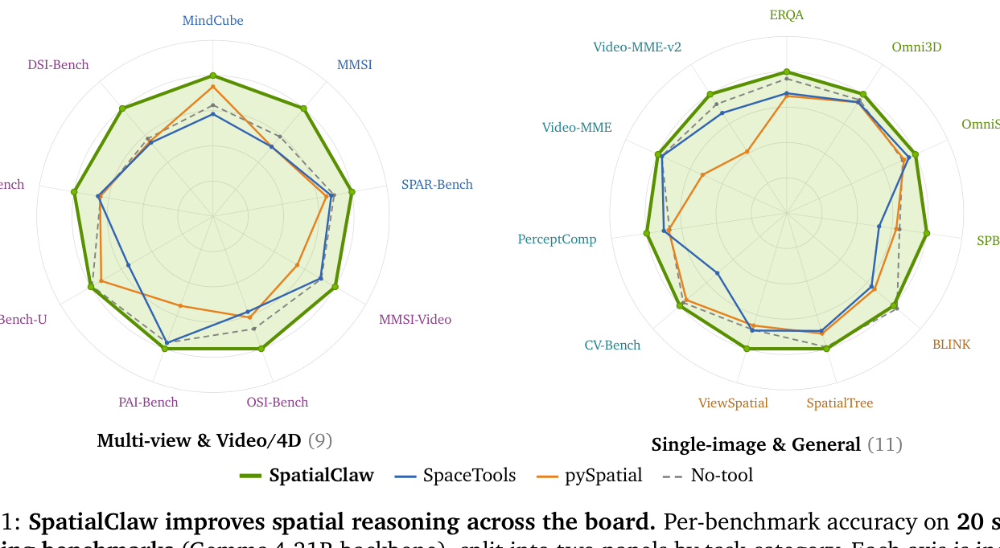
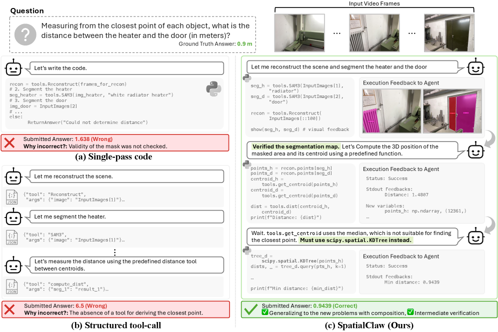
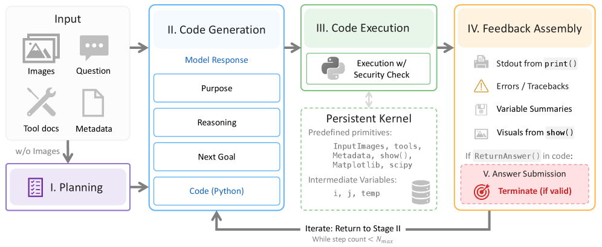
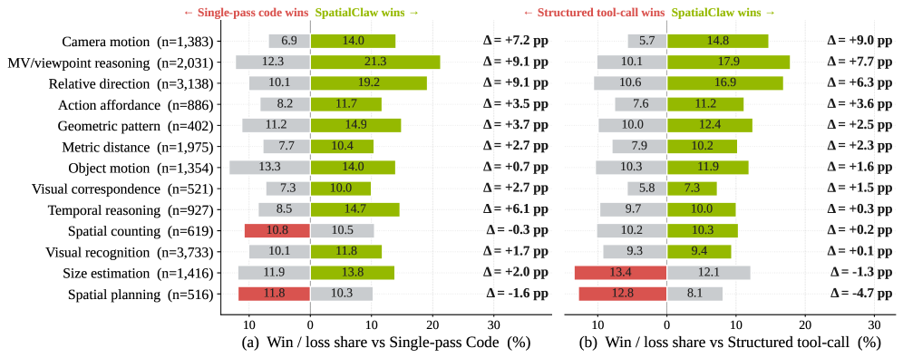
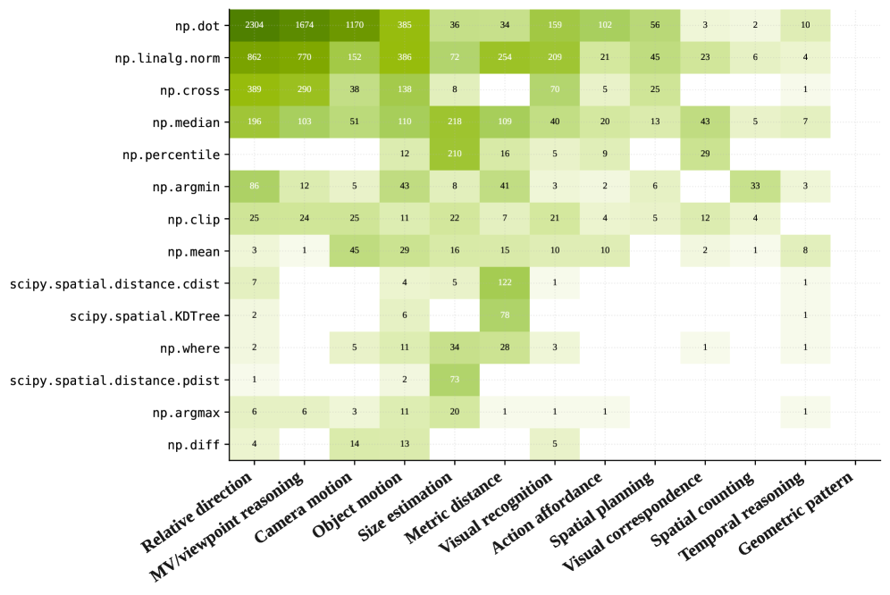

한 줄 요약
SpatialClaw는 비전-언어 모델(VLM)이 공간 추론 문제를 풀 때, 고정된 JSON 도구 호출이나 원샷 코드 실행 대신 상태를 유지하는 Python 커널에서 단계적으로 코드를 작성·실행·수정할 수 있게 하는 프레임워크다. 학습 없이(training-free) 20개 공간 추론 벤치마크에서 평균 59.9% 정확도, 기존 공간 에이전트 대비 +11.2%p 향상을 기록했다.

Figure 1: SpatialClaw는 단일 이미지, 다중 시점, 비디오/4D, 일반 공간 추론을 포함한 20개 벤치마크에서 일관된 성능 향상을 보인다. (NVIDIA Research)왜 “액션 인터페이스”가 중요한가?
도구를 쓰는 VLM 에이전트의 성능은 “어떤 도구가 있느냐”가 아니라 **“그 도구를 어떻게 조합하느냐”**에 달려 있다. SpatialClaw 논문은 기존 공간 추론 에이전트의 액션 인터페이스를 세 가지로 분류하고, 각각의 한계를 지적한다.

Figure 2: 세 가지 액션 인터페이스 비교. (a) Single-pass code는 실행 전 전략을 확정한다. (b) Structured tool-call은 JSON/XML 기반 고정 명령으로 자유로운 조합이 어렵다. (c) SpatialClaw는 Python 커널에서 중간 결과를 관찰하고 전략을 수정한다.(a) Single-pass Code — “실행하고 보니 이미 늦다”
전체 Python 프로그램을 한 번에 작성해 실행한다. 중간 결과를 보기 전에 분석 전략을 확정해야 하므로, 초기 가정이 틀리면 오류가 끝까지 전파된다.
(b) Structured Tool-call — “조합의 자유가 없다”
JSON이나 XML 기반의 타입드(type) 도구 인터페이스를 사용한다. 개별 도구 호출은 안정적이지만, NumPy/SciPy 기반의 자유로운 수치 연산과 결합하기 어렵다. 예를 들어 두 점구름(point cloud)의 ICP 정합 결과를 받아서 다시 변환 행렬로 조작하는 과정을 표현하기 까다롭다.
(c) SpatialClaw — “쓰고, 보고, 고치고”
코드를 액션 인터페이스로 사용한다. VLM 에이전트가 상태를 유지하는 Python 커널에 접근하여, 한 스텝마다 하나의 실행 가능한 셀을 작성한다. 중간 결과(텍스트 출력, 시각화 이미지)를 관찰한 뒤 다음 셀에서 전략을 수정할 수 있다.
SpatialClaw의 작동 방식

Figure 3: SpatialClaw의 에이전트 루프. 입력 프레임과 지각 프리미티브가 미리 로드된 Python 커널에서, VLM이 코드 셀을 순차적으로 작성하고 실행하며 중간 결과를 확인한다.핵심 구성요소
- 상태 유지 Python 커널: 입력 이미지/프레임과 함께深度 추정, 세그멘테이션, 광학 흐름, 포인트 클라우드 처리 등의 지각·기하학 프리미티브가 사전 로드된다.
- 단계적 코드 실행: 에이전트는 한 번에 하나의 Python 셀을 작성한다. 실행 결과(출력 텍스트, 렌더링된 이미지)를 즉시 관찰한다.
- 적응적 전략 수정: 중간 결과를 바탕으로 다음 셀에서 분석 방향을 변경할 수 있다. 예를 들어 깊이 맵에서 예상보다 가까운 객체를 발견하면, 접근 방식을 조정한다.
- 답변 제출 단계: 충분한 증거가 모이면 에이전트가 최종 답변을 제출한다.
지원 프리미티브의 폭
SpatialClaw는 단일 이미지 깊이 추정, 다중 시점 스테레오, 비디오 광학 흐름, 3D 메시 처리, 포인트 클라우드 정합(ICP), SURF/SIFT 특징 매칭, 형태 기하학 분석 등 다양한 컴퓨터 비전 및 기하학 연산을 프리미티브로 제공한다.
실험 결과: 20개 벤치마크, 6개 VLM 백본
전체 성능
SpatialClaw는 정적/동적 3D 및 4D 공간 추론을 다루는 20개 벤치마크에서 평가되었다:
| 메트릭 | SpatialClaw | 이전 SOTA 공간 에이전트 |
|---|---|---|
| 평균 정확도 | 59.9% | 48.7% |
| 향상 | — | +11.2%p |

Figure 4: 13개 메타 카테고리에서 SpatialClaw와 베이스라인의 1:1 승/패 마진. 거의 모든 카테고리에서 SpatialClaw가 우위를 보인다.6개 VLM 백본에서의 일관된 향상
SpatialClaw는 특정 모델에 최적화되지 않았다. 서로 다른 모델 패밀리의 6개 VLM 백본에서 일관된 성능 향상을 보였다. 이는 논문의 핵심 주장—성능 향상의 원천은 모델이 아니라 액션 인터페이스—을 뒷받침한다.
메타 카테고리별 분석

Figure 5: 메타 카테고리별 프리미티브 사용 빈도. SpatialClaw 에이전트는 문제 유형에 따라 자연스럽게 다른 도구 조합을 사용한다.에이전트가 문제의 성격에 따라 서로 다른 프리미티브 조합을 선택한다는 점이 흥미롭다:
- 단일 이미지 문제: 단안 깊이 추정 + 픽셀 좌표 변환 위주
- 다중 시점 문제: 스테레오 정합 + 카메라 파라미터 추정 위주
- 비디오/4D 문제: 광학 흐름 + 시계열 객체 추적 위주
왜 코드 인터페이스가 이기는가?
SpatialClaw의 핵심 통찰은 단순하다: 공간 추론은 본질적으로 반복적(iterative)이고 조합적(compositional)이다.
- 반복성: 첫 번째 시도에서 정답에 도달하기 어렵다. 중간 결과를 보고 전략을 수정하는 능력이 필수적이다.
- 조합성: 깊이 추정 → 좌표 변환 → 거리 계산 → 각도 추정처럼 여러 연산을 자유롭게 연결해야 한다. 고정된 JSON 도구 호출로는 이 수준의 유연성을 확보하기 어렵다.
- 표현력: NumPy/SciPy 생태션의 전체 표현력을 사용할 수 있다. 벡터 연산, 선형 대수, 최적화 등을 코드 한 줄로 표현 가능하다.
시사점
VLM 에이전트 설계에 미치는 영향
SpatialClaw는 액션 인터페이스의 설계가 도구 자체의 성능만큼 중요하다는 점을 실험적으로 증명했다. 이는 향후 도구 사용 에이전트 설계에 새로운 방향을 제시한다:
- 단순히 더 많은 도구를 추가하는 대신, 도구 간 조합의 자유도를 높이는 방향으로 설계해야 한다.
- 에이전트가 중간 결과를 관찰하고 전략을 수정할 수 있는 피드백 루프가 필수적이다.
한계
- 지연 시간: 단계적 코드 실행은 여러 라운드의 VLM 호출을 필요로 하므로, 단일 패스 방식보다 추론 시간이 길다.
- 커널 의존성: Python 커널의 안정성과 프리미티브 구현 품질이 전체 성능에 직접적 영향을 미친다.
- 벤치마크 범위: 20개 벤치마크는 다양하지만, 실제 로봇 조작이나 자율 주행 같은 실물 환경에서의 검증은 향후 과제다.
참고 자료
- 📄 논문: arXiv:2606.13673
- 🌐 프로젝트 페이지: spatialclaw.github.io
- 🏢 소속: NVIDIA Research (KAIST 협업)
- 📅 발표: 2026년 6월 11일
Seokju Cho, Ryo Hachiuma, Abhishek Badki, Hang Su, Byung-Kwan Lee, Chan Hee Song, Sifei Liu, Subhashree Radhakrishnan, Seungryong Kim, Yu-Chiang Frank Wang, Min-Hung Chen. “SpatialClaw: Rethinking Action Interface for Agentic Spatial Reasoning.” arXiv:2606.13673, 2026.